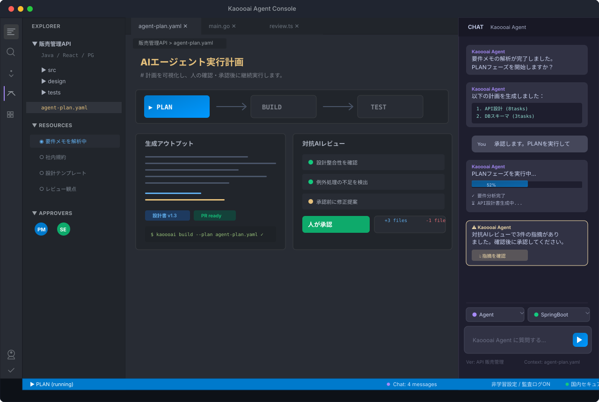
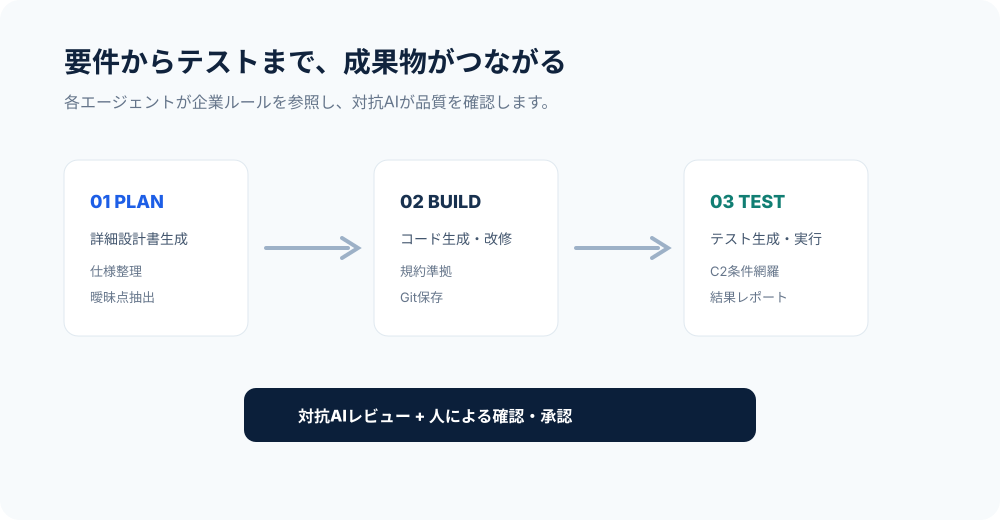

レビューできる人が限られる
設計・コード・テストの確認が特定メンバーに集中し、納期と品質の両立が難しくなります。
Kaoooaiは、設計・コーディング・テスト・改修をAIエージェントでつなぎ、人間は重要な確認・判断・承認に集中できる環境を、日本企業の開発現場に合わせて構築します。

人手不足、技術の属人化、レビュー不足、テスト漏れ、納期遅れ、品質のばらつき、設計書の一貫性。Kaoooaiは、AIの自動化だけでなく、企業固有のルールや暗黙知を「再現できる仕組み」に変えることを重視します。
設計・コード・テストの確認が特定メンバーに集中し、納期と品質の両立が難しくなります。
既存コードや関連機能を横断して確認できず、改修後の障害や手戻りにつながります。
テンプレートや規約はあっても、実装・レビュー・テストで守り切れず、成果物品質がばらつきます。
Kaoooaiは単一のチャットUIではありません。詳細設計生成、コード生成、テスト生成・実行、改修、E2E、個人情報除去、自己改善提案までを、企業ルールと標準化ナレッジに接続します。
INPUT資料から実装可能な粒度の設計書を生成し、不足・曖昧点を整理します。
開発規約、命名規則、サンプルコードを参照し、ビルド確認まで実施します。
正常系・異常系・境界値・例外処理を含むテスト観点を生成し、結果をレポート化します。

Kaoooaiでは、設計書作成・実装・テストの各工程で50〜60%程度の工数削減を目安に、貴社の開発プロセスでの効果をPoCで確認します。Kaoooaiは削減だけでなく、品質確認のプロセス化を重視します。
| 工程 | 従来手動 | 生成AI | レビュー＋修正 | 削減率 |
|---|---|---|---|---|
| 設計書作成 | 1〜2日 | 15分 | 4時間 | 60%見込み |
| 実装 | 2〜3日 | 60分 | 6時間 | 50%見込み |
| 単体テスト | 1〜2日 | 120分 | 2時間＋実行 | 60%見込み |
データ非学習、国内セキュア環境、RBAC、監査ログ、個人情報除去。生成AI活用と情報保護を両立する運用を支援します。
入力データや生成成果物を、AIモデルの再学習に利用しません。
要件に応じて国内インフラ・専用環境・Local AI構成をご相談可能です。
権限設定により、閲覧・実行・承認の操作範囲を管理します。
操作履歴を記録し、レビューと内部統制に対応します。
導入時は、貴社の開発規約・設計方針・業務特性を整理し、AIが活用可能な形式へ変換します。PoCから本番運用、継続的な品質改善まで段階的に進めます。
資料・規約・現状課題を確認し、PoC対象と評価指標を定義します。
実プロジェクトに近い条件で、効果と実現性を検証します。
プロンプト、Skills、テンプレート、レビュー観点を最適化します。
操作説明、定例会、チャットサポートを通じて運用定着を支援します。
プロダクトリリース、ケーススタディ、PoC・導入検討に役立つ情報をまとめています。
内容に応じてご案内します